5.4 ggplot2
Prerequisites: tidyverse 패키지 또는 ggplot2 패키지 읽어오기:
require(tidyverse) 또는 require(ggplot2) 실행
- 데이터에 대한 그래프는 데이터의 속성(수치형, 범주형)과 시각적 속성(점, x-y 좌표 위치, 선, 색상, 막대의 높이) 간에 대응 또는 매핑(mapping) 으로 이루어짐
- R 에서 가장 유명한 데이터 시각화 패키지 중 하나로 2005년 Hadley Wickham이 개발 및 배포
- Leland Wilkinson 의 grammar of graphics (Wilkinson 2012) 를 구현
Grammar of graphics: 그래프를 구현하기 위한 일관적인 체계로 그래프를 데이터, 스케일, 레이어, 좌표 등과 같은 의미론적 요소(sementic components) 로 나눔
- ggplot의 grammar of graphics
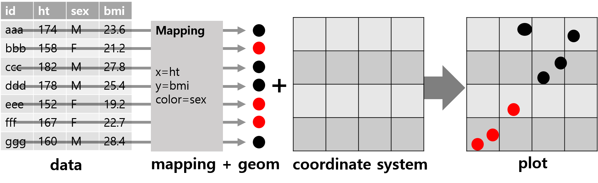
Figure 5.20: ggplot의 grammar of graphics 주요 구성 요소
- R 기본 graphics 패키지의 경우 데이터 속성을 시각적 속성으로 매핑 시 매 경우가 고유한 작업이고, 매핑이 변경될 경우 데이터를 재구성하거나 완전히 다른 plotting 함수를 적용해야 함.
- R base graphics와 ggplot의 비교
# R 기본 데이터셋: ToothGrowth
ToothGrowth %>%
group_by(supp, dose) %>%
summarise(mean = mean(len)) %>%
mutate(dose = factor(dose,
ordered = TRUE))-> tg_long`summarise()` regrouping output by 'supp' (override with `.groups` argument)tg_long %>%
spread(supp, mean) %>%
column_to_rownames("dose") %>% # 열 값을 열이름으로 변환(in tibble 패키지)
as.matrix -> tg_mat
# R graphics: barplot() 사용
barplot(tg_mat, beside = TRUE)Figure 5.21: R 기본 barplot() 생성 그래프
dose별 OJ와 VC 막대도표:dose로 그룹화를 하기 위해 데이터 구조 변경(전치) 필요
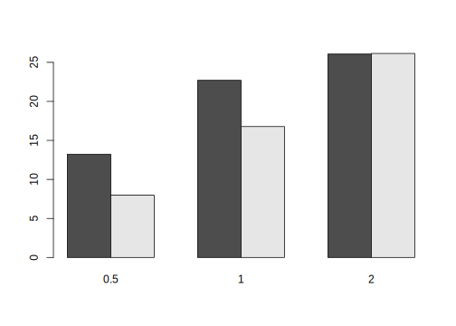
Figure 5.22: R 기본 barplot() 생성 그래프: 데이터 전치
- 막대 대신 선(line)으로 표현
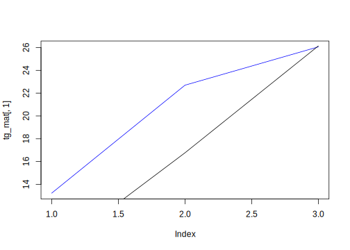
Figure 5.23: R 기본 선 그래프: plot(), lines() 함수 사용
plot()함수 호출 시 y 축 범위가 첫 번째 선에 대해서만 설정- x 축이 범주 대신 번호가 사용
- ggplot 사용: 데이터 프레임에만 적용 가능(데이터 구조는 long-format)
# require(ggplot2)
ggplot(data = tg_long,
aes(y = mean)) -> gmap # 기본 mapping 유지를 위해
# ggplot 클래스 객체 저장
gmap +
geom_bar(aes(x = supp, fill = dose),
stat = "identity", # 데이터 고유값을 막대 높이로 사용
position = "dodge") # 막대 위치 조정(beside 조건과 유사)Figure 5.24: ggplot()과 geom_bar()을 이용한 막대 도표
- 데이터 구조를 변경하지 않고 ggplot의 매핑 변수 변경

Figure 5.25: x와 fill의 mapping 변경
- ggplot을 이용한 선 도표 생성
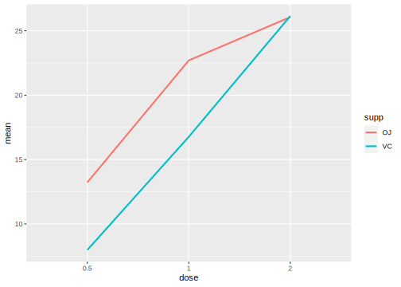
Figure 5.26: geom_line()을 이용한 선 그래프 생성
- 기본 그래프 함수를 이용해 막대도표 대신 선 도표 생성 시 완전히 다른 명령 사용
- 선 그래프 생성 시 기본 그래프는 하나씩 도표를 추가한 반면, geom_line()의 경우 모든 선이 한번에 그려짐
5.4.1 기본 문법
ggplot(data = <DATA>) +
<GEOM_FUNCTION>(mapping = aes(<MAPPINGS>)) +
<SCALE_FUNCTION> +
<LABEL or GUIDES> +
<ANNOTATION> +
<THEME>용어(terminology)
- data: 시각화의 대상으로 관측값과 변수(열)로 이루어짐
- geom: 데이터의 값을 시각적으로 보여주기 위한 레이어로 막대, 선, 점과 같은 기하학적 객체
- aesthetic: geom의 시각적 속성을 정의하며, x, y 위치, 선 색상, 점 모양 등을 정의
- mapping: 데이터 값을 asthetic에 매핑
- scale: asthetic에 매핑 시 세부 값들을 제어
- guide: 그래프 해석에 도움을 주는 속성으로 x-y 축의 눈금, 레이블, 범례(legend)를 포함
- annotation: 생성한 그래프 위에 추가적인 정보(선, 화살표, 텍스트, 도형 등) 추가
- theme: 그래프의 비데이터적 요소(제목, 레이블, 글꼴, 배경색, 격자, 범례 등) 제어를 통해 그래프의 미적 효과 극대화
ggplot 계열 함수에서 범주형 변수(categorical variable)은 이산형(discrete), 수치형 변수(numeric variable)을 연속형(continuous)이라고 명칭함.
ggplot 그래프 생성 기본 단계(각 단계(layer)는 + 연산자로 덧붙혀짐)
ggplot()으로 ggplot 객체 초기화aes()함수로 x-y 축 지정- geom 계열 함수로 데이터를 시각적 요소로 매핑. 이때 aes() 함수와 같이 색상, 크기 등 지정
- scale 계열 함수를 이용해 asthetic의 세부 값을 조정
- 축 제목, 레이블, 범례 설정 조정
- 필요 시 theme 조정을 통해 시각적 요소 가미
ggplot(): ggplot 객체를 생성하는 함수로 시각화할 데이터가 무엇인지, 그리고 데이터에 포함된 변수들이 어떤 asthetic에 매핑되는지를 선언aes(): 데이터 내 변수들이 어떤 geoms 레이어에서 어떤 시각적 속성을 갖는지를 지정해주는 함수로 ggplot() 함수 내, 혹은 독립적인 레이어로 추가 가능- ggplot에서 지정한 데이터 내에서 평가되기 때문에 변수명 지정 시 원래 데이터셋 참조할 필요 없음(예:
ggplot(data = car, aes(x = speed)))
- ggplot에서 지정한 데이터 내에서 평가되기 때문에 변수명 지정 시 원래 데이터셋 참조할 필요 없음(예:
# ggplot()을 이용한 ggplot 생성
# 표현식 1
ggplot(data = <DATA>, # 데이터 프레임, 티블 객체
mapping = aes(x = <X-axis>,
y = <Y-axis>,
color = <색 속성을 부여할 변수 이름>,
fill = <면의 색 속성을 부여할 변수 이름>,
group = <group 변수 지정>
# 보통 선 그래프 작성 시 이을 선에 대한
# 그룹을 지정하기 위해 사용
group
...)) +
<GEOM_FUNCTION>
# 표현식 2
ggplot(data = <DATA>) +
aes(...) +
<GEOM_FUNCTION>(mapping = aes(...))
# 표현식 3
ggplot(data = <DATA>) +
<GEOM_FUNCTION>(mapping = aes(x, y, ...))
# 표현식 4
<GGPLOT_OBJECT> <- ggplot(data = <DATA>)
<GGPLOT_OBJECT> +
<GEOM_FUNCTION>(mapping = aes(...))# cars 데이터셋
## ggplot() 내에 aes() 지정
ggplot(data = cars,
aes(x = speed, y = dist)) +
geom_point()
## aesthetic을 ggplot() 함수 밖에서 지정
ggplot(data = cars) +
aes(x = speed, y = dist) +
geom_point()
## geom 계열 함수 내에서 asthetic 지정
ggplot(data = cars) +
geom_point(aes(x = speed, y = dist))
## ggplot 객체 생성
gp <- ggplot(data = cars); gp
gp <- gp +
aes(x = speed, y = dist); gp
gp + geom_point()
## 참고: R 기본 plot()의 결과는 객체로 저장되지 않음
grph <- plot(cars); grph- 주요 aesthetics
x,y: x-y 축에 해당하는 변수명.x와y의 이름은 생략 가능(예:ggplot(data = car, aes(speed, dist)로도 사용 가능))color: 점, 선, 텍스트 색상fill: 면(막대, 상자, 도형 등) 색상alpha: 색상의 투명도group: 시각화에 사용할 데이터의 그룹size: 점, 선, 텍스트의 크기 또는 굵기shape: 점의 모양(그림 5.4 참고). R 기본 그래픽 파라미터pch와 호환linetype: 선의 형태 지정하며 그림 5.4 의 선 형태 지정 방법 준용(숫자, 문자열 모두 사용 가능)
- 색상 관련 aesthetics:
color,fill,alphaaes()함수 내부 또는 외부에서 인수 조정 가능(함수 내부: 변수명으로 지정, 함수 외부: 특정 값으로 지정)
# 막대도표 예시
# `aes()` 함수 외부에서 사용 시 단일 값을 입력
gpcol <- ggplot(data = mpg, aes(x = class))
gpcol + geom_bar() +
labs(title = "Default geom_bar()") # 그래프 제목 지정
gpcol + geom_bar(fill = "navy") +
labs(title = "fill = 'navy'")# 막대도표 예시
gpcol + geom_bar(color = "red") +
labs(title = "color = 'red'")
gpcol + geom_bar(color = "red", fill = "white")+
labs(title = "color = 'red', fill = 'white'") 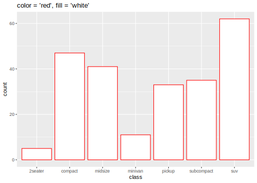
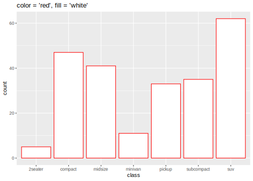
# 연료 타입에 따라 면 색 지정
gpcol +
geom_bar(aes(fill = fl)) +
labs(title = "Filled by fuel types (fl)")
# 연료 타입에 따라 막대 선 색 지정
gpcol +
geom_bar(aes(color = fl)) +
labs(title = "Colored by fuel types (fl)")
# alpha: 0-1 사이 값을 갖고 투명도 지정
# 주로 aes() 함수 밖에서 사용됨
set.seed(20200605)
df1 <- tibble(
x = rnorm(5000),
y = rnorm(5000)
)
gpalpha <- ggplot(data = df1, aes(x, y))
gpalpha + geom_point() +
labs(title = "alpha = 1")
gpalpha + geom_point(alpha = 0.1) +
labs(title = "alpha = 0.1") 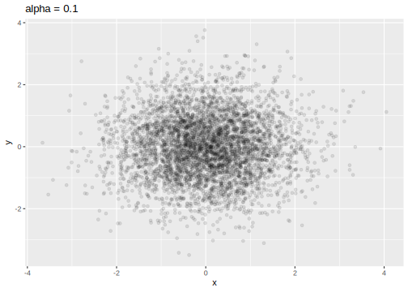
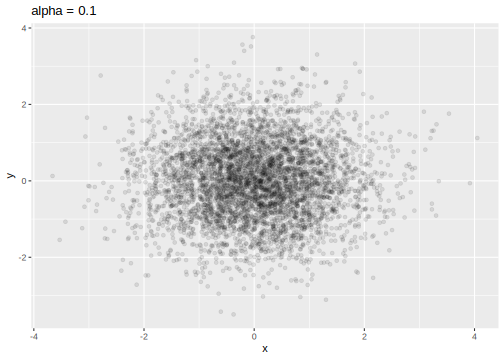
- 그룹(group) aesthetic
- 기본적으로
aes()내부에서 aesthetic에 대응하는 변수가 이산형(범주형) 변수로 정해짐 - 보통은 color, shape, linetype 으로 그룹 지정이 가능하지만 충분하지 않은 경우
group인수 값 지정
- 기본적으로
# 다중 집단에 하나의 aesthetic만 적용한 경우
## gapminder 데이터셋
gapm <- read_csv("dataset/gapminder/gapminder_filter.csv")
gapm_filter <- gapm %>%
filter(grepl("Asia", region))
gpgroup <- ggplot(data = gapm_filter,
aes(x = year, y = life_expectancy))
gpgroup + geom_line(size = 0.5, alpha = 0.2)
gpgroup_l <- gpgroup + geom_line(aes(group = country),
size = 0.5, alpha = 0.2)
gpgroup_l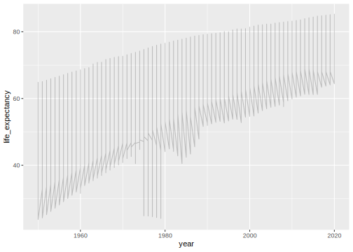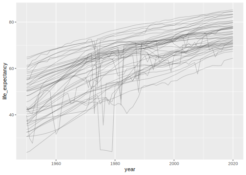
# 전체 아시아 국가의 평균 추세선
## geom_line과 geom_smooth 모두 group을 country로 지정
gpgroup_l +
geom_smooth(aes(group = country),
method = "loess",
size = 0.5,
color = "blue",
se = FALSE)
## 모든 국가에 가장 적합한 하나의 곡선으로 fitting
gpgroup_l +
geom_smooth(aes(group = 1),
method = "loess",
size = 1,
color = "blue",
se = FALSE)
- 크기(size), 점 모양(shape), 선모양(linetype) aesthetic
# size 지정
gpsize <- ggplot(data = mtcars,
aes(disp, mpg))
gpsize + geom_point(size = 4)
gpsize + geom_point(aes(size = hp),
alpha = 0.5)

gpshape <- ggplot(data = mtcars,
aes(hp, mpg))
gpshape +
geom_point(shape = 5) #
# 실린더 개수에 따라 점 모양 지정
gpshape +
geom_point(aes(shape = factor(cyl)),
size = 4)
## pch를 인수로 사용해도 동일한 그래프 출력
# gpshape +
# geom_point(aes(pch = factor(cyl)),
# size = 4)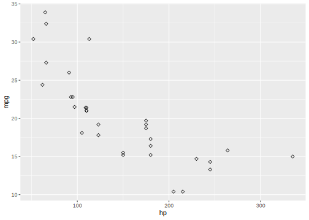
# linetype 지정
## economics_long 데이터셋
gplty <- ggplot(data = economics_long,
aes(x = date, y = value01))
gplty +
geom_line(aes(group = variable, color = variable),
size = 0.5,
linetype = 6)
# 실린더 개수에 따라 점 모양 지정
gplty +
geom_line(aes(linetype = variable,
color = variable),
size = 0.5)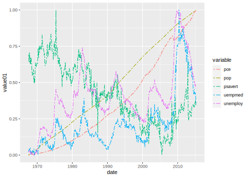
5.4.2 Geoms: 선 관련 geometric
geom_line(): x축에 대응한 변수의 순서대로 관측값을 선으로 연결geom_path(): 관측치가 데이터셋에 나타난 순서대로 선으로 연결geom_abline(slope, intercept): 기울기(slope) 절편(intercept)에 대한 직선 \(\rightarrow\) R 기본 그래픽 함수abline(a=value, b=value)와 유사geom_vline(xintercept): x축에 수직(y 축에 수평)인 직선 생성geom_hline(yintecept): x축에 수평(y 축에 수직)인 직선 생성
# gap-minder 데이터
gpline <- ggplot(data = gapm_filter,
aes(y = gdp_cap))
# geom_line
gpline +
geom_line(aes(x = year,
group = country),
size = 0.5,
alpha = 0.3,
linetype = "solid") -> gpline
gpline
# geom_path
highlight_country <- c("South Korea", "China", "Japan",
"India", "Taiwan", "Singapore")
# dplyr 패키지 체인과 ggplot 함수 연결 가능
gppath <- gapm %>%
filter(year >= 2000,
country %in% highlight_country) %>%
ggplot(aes(x = gdp_cap,
y = life_expectancy))
gppath + geom_path(aes(group = country))# 선 굵기 및 색상 조정
gppath +
geom_path(aes(color = country),
size = 4,
alpha = 0.5) -> gppath
# 선과 점 동시에 출력
gppath +
geom_point(aes(shape = country),
size = 2)# geom_abline, geom_hline, geom_vline
## abline
m <- lm(gdp_cap ~ year, data = gapm_filter)
gpline +
geom_abline(slope = coef(m)[2],
intercept = coef(m)[1],
size = 2,
color = "blue") -> gplines
gplines## hline
gplines +
geom_hline(yintercept = mean(gapm_filter$gdp_cap,
na.rm = TRUE),
color = "red",
size = 1) -> gplines
gplines + ggtitle("Addling a horizontal line: mean of gdp_cap")
## vline
gplines +
geom_vline(xintercept = mean(gapm_filter$year,
na.rm = TRUE),
color = "red",
size = 1) +
ggtitle("Adding a vertical line: mean of year")
5.4.3 Geoms: 점 geometrics
geom_point(): ggplot 객체에 지정된 aesthetic (x-y에 대응하는 변수)에 대한 산점도를 생성geom_jitter(): 각 점의 위치에 random noise를 추가해 overplotting 처리 \(\rightarrow\)geom_point(position = "jitter")의 축약 버전
# geom_point
## 갭마인더 데이터: 2015년 기대수명 vs. 일인당 국민소득 산점도
gppoint <- gapm %>%
mutate(continent = gsub("(.+\\s)", "", region) %>%
# region 변수에서 공백 앞 문자 모두 제거
factor) %>%
filter(year == 2015) %>%
ggplot(aes(x = life_expectancy, y = gdp_cap))
gppoint +
geom_point(size = 1)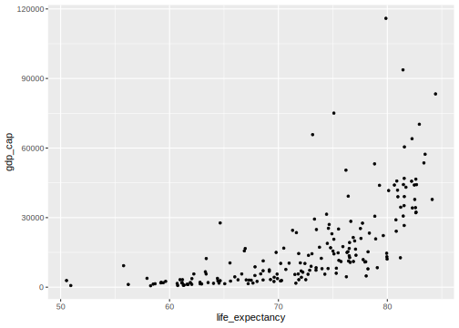
## 점의 크기는 해당 국가 인구수(log10 변환) 에 비례
## 각 대륙에 따라 색 구분
## 투명도는 0.3
## --> Bubble plot
gppoint +
geom_point(aes(size = log(population, base=10),
color = continent),
alpha = 0.3)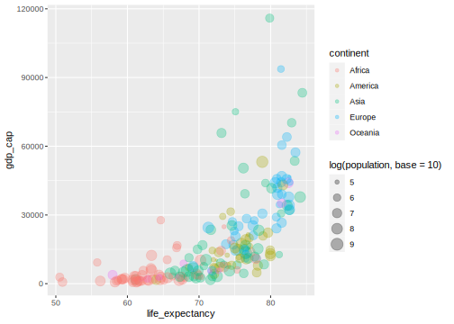
## mpg 데이터 셋
## cylinder 개수에 따른 시내 연비
gppoint2 <- ggplot(data = mpg,
aes(x = cyl, y = cty))
gppoint2 + geom_point(size = 3)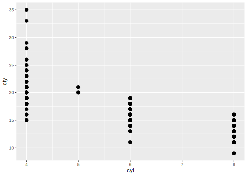
# geom_jitter
## geom_point에서 position 인수 조정
gppoint2 +
geom_point(position = "jitter") +
ggtitle("geom_point() with position = 'jitter'")
## geom_jitter: jittering 크기는 0.3
## class로 색 조정
gppoint2 +
geom_jitter(aes(color = class),
width = 0.3) +
ggtitle("Jittering using geom_jitter()")

5.4.4 Geoms: 막대 geometrics
geom_bar(): 범주형(factor 또는 문자열) 변수에 대응하는 케이스의 수를 막대의 높이로 나타냄.- 기본적으로
stat_count()를 통해 각 집단 별 케이스 수가 그래프에 표현 - 함수 내
stat인수 값을 “identity”로 설정 시 데이터 값 표현 가능
- 기본적으로
geom_col(): 데이터 값 자체를 높이로 표현stat_identity()를 사용
# geom_bar(), geom_col() 주요 함수 인수
<MAPPING> = aes() 함수를 통해 수행
geom_bar()의 경우 aes() 내 x 위치에 대응하는
변수명만 입력해도 되지만, geom_col()의 경우,
x, y 에 대응하는 변수 모두 입력
<ARGUMENTS>
- width: 상자의 너비 조정
- positon: 문자열 또는 위치 조정 관련 함수 호출 가능
두 개 이상의 범주가 한 그래프에 표현된 경우,
디폴트 값은 "stack" (position_stack() 호출). 5.4.4.1 geom_bar()
5.4.4.2 geom_errorbar()
5.4.4.3 geom_text()
5.4.4.4 geom_histogram()
5.4.4.5 geom_boxplot()
5.4.4.6 geom_density()
5.4.4.7 geom_smooth()
References
Wilkinson, Leland. 2012. “The Grammar of Graphics.” In Handbook of Computational Statistics, 375–414. Springer.